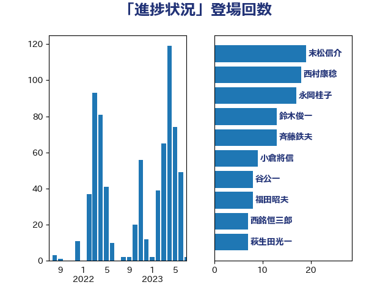

単語「進捗状況」

| 末松信介 | 自由民主党 | 19 回 |
| 西村康稔 | 自由民主党 | 18 回 |
| 永岡桂子 | 自由民主党 | 17 回 |
| 鈴木俊一 | 自由民主党 | 13 回 |
| 斉藤鉄夫 | 公明党 | 13 回 |
| 小倉將信 | 自由民主党 | 9 回 |
| 谷公一 | 自由民主党 | 8 回 |
| 福田昭夫 | 立憲民主党 | 8 回 |
| 西銘恒三郎 | 自由民主党 | 7 回 |
| 萩生田光一 | 自由民主党 | 7 回 |
| 岬麻紀 | 日本維新の会 | 7 回 |
| 塩田博昭 | 公明党 | 7 回 |
| 下野六太 | 公明党 | 7 回 |
| 岸田文雄 | 自由民主党 | 6 回 |
| 階猛 | 立憲民主党 | 5 回 |
| 金城泰邦 | 公明党 | 5 回 |
| 渡辺博道 | 自由民主党 | 5 回 |
| 林芳正 | 自由民主党 | 5 回 |
| 新垣邦男 | 立憲民主党 | 5 回 |
| 後藤茂之 | 自由民主党 | 5 回 |
| 宮崎勝 | 公明党 | 5 回 |
| 高橋千鶴子 | 日本共産党 | 4 回 |
| 鈴木敦 | 国民民主党 | 4 回 |
| 鈴木宗男 | 日本維新の会 | 4 回 |
| 西村明宏 | 自由民主党 | 4 回 |
| 吉田宣弘 | 公明党 | 4 回 |
| 串田誠一 | 日本維新の会 | 4 回 |
| 中川康洋 | 公明党 | 4 回 |
| 青山大人 | 立憲民主党 | 3 回 |
| 阿部司 | 日本維新の会 | 3 回 |
| 野田国義 | 立憲民主党 | 3 回 |
| 赤嶺政賢 | 日本共産党 | 3 回 |
| 藤巻健太 | 日本維新の会 | 3 回 |
| 舩後靖彦 | れいわ新選組 | 3 回 |
| 美延映夫 | 日本維新の会 | 3 回 |
| 石井苗子 | 日本維新の会 | 3 回 |
| 石井章 | 日本維新の会 | 3 回 |
| 田村まみ | 国民民主党 | 3 回 |
| 熊谷裕人 | 立憲民主党 | 3 回 |
| 清水貴之 | 日本維新の会 | 3 回 |
| 柴田巧 | 日本維新の会 | 3 回 |
| 松本剛明 | 自由民主党 | 3 回 |
| 平林晃 | 公明党 | 3 回 |
| 川田龍平 | 立憲民主党 | 3 回 |
| 川合孝典 | 国民民主党 | 3 回 |
| 岡田直樹 | 自由民主党 | 3 回 |
| 山本博司 | 公明党 | 3 回 |
| 小沢雅仁 | 立憲民主党 | 3 回 |
| 安江伸夫 | 公明党 | 3 回 |
| 大河原まさこ | 立憲民主党 | 3 回 |
| 堤かなめ | 立憲民主党 | 3 回 |
| 堂込麻紀子 | 無所属 | 3 回 |
| 加藤勝信 | 自由民主党 | 3 回 |
| 佐藤英道 | 公明党 | 3 回 |
| 上杉謙太郎 | 自由民主党 | 3 回 |
| 三上えり | 立憲民主党 | 3 回 |
| ながえ孝子 | 無所属 | 3 回 |
| 鬼木誠 | 立憲民主党 | 2 回 |
| 高良鉄美 | 無所属 | 2 回 |
| 高木かおり | 日本維新の会 | 2 回 |
| 高市早苗 | 自由民主党 | 2 回 |
| 須藤元気 | 無所属 | 2 回 |
| 音喜多駿 | 日本維新の会 | 2 回 |
| 鎌田さゆり | 立憲民主党 | 2 回 |
| 金子俊平 | 自由民主党 | 2 回 |
| 野間健 | 立憲民主党 | 2 回 |
| 赤池誠章 | 自由民主党 | 2 回 |
| 谷合正明 | 公明党 | 2 回 |
| 角田秀穂 | 公明党 | 2 回 |
| 西岡秀子 | 国民民主党 | 2 回 |
| 若松謙維 | 公明党 | 2 回 |
| 紙智子 | 日本共産党 | 2 回 |
| 竹内真二 | 公明党 | 2 回 |
| 窪田哲也 | 公明党 | 2 回 |
| 秋野公造 | 公明党 | 2 回 |
| 福山哲郎 | 立憲民主党 | 2 回 |
| 神谷裕 | 立憲民主党 | 2 回 |
| 神田潤一 | 自由民主党 | 2 回 |
| 石垣のりこ | 立憲民主党 | 2 回 |
| 田島麻衣子 | 立憲民主党 | 2 回 |
| 田名部匡代 | 立憲民主党 | 2 回 |
| 田中健 | 国民民主党 | 2 回 |
| 瀬戸隆一 | 自由民主党 | 2 回 |
| 漆間譲司 | 日本維新の会 | 2 回 |
| 湯原俊二 | 立憲民主党 | 2 回 |
| 池畑浩太朗 | 日本維新の会 | 2 回 |
| 櫻田義孝 | 自由民主党 | 2 回 |
| 柴愼一 | 立憲民主党 | 2 回 |
| 平山佐知子 | 無所属 | 2 回 |
| 川崎ひでと | 自由民主党 | 2 回 |
| 岸真紀子 | 立憲民主党 | 2 回 |
| 岩本剛人 | 自由民主党 | 2 回 |
| 山田美樹 | 自由民主党 | 2 回 |
| 山崎正恭 | 公明党 | 2 回 |
| 小野泰輔 | 日本維新の会 | 2 回 |
| 小田原潔 | 自由民主党 | 2 回 |
| 小池晃 | 日本共産党 | 2 回 |
| 小林鷹之 | 自由民主党 | 2 回 |
| 小宮山泰子 | 立憲民主党 | 2 回 |
| 宮澤博行 | 自由民主党 | 2 回 |
| 宮口治子 | 立憲民主党 | 2 回 |
| 室井邦彦 | 日本維新の会 | 2 回 |
| 奥野総一郎 | 立憲民主党 | 2 回 |
| 太田房江 | 自由民主党 | 2 回 |
| 塩川鉄也 | 日本共産党 | 2 回 |
| 吉田久美子 | 公明党 | 2 回 |
| 吉田とも代 | 日本維新の会 | 2 回 |
| 北神圭朗 | 無所属 | 2 回 |
| 勝部賢志 | 立憲民主党 | 2 回 |
| 保岡宏武 | 自由民主党 | 2 回 |
| 伊佐進一 | 公明党 | 2 回 |
| 井上哲士 | 日本共産党 | 2 回 |
| 中野英幸 | 自由民主党 | 2 回 |
| 上田勇 | 公明党 | 2 回 |
| 齋藤健 | 自由民主党 | 1 回 |
| 高橋英明 | 日本維新の会 | 1 回 |
| 高木真理 | 立憲民主党 | 1 回 |
| 青木愛 | 立憲民主党 | 1 回 |
| 阿部知子 | 立憲民主党 | 1 回 |
| 阿部弘樹 | 日本維新の会 | 1 回 |
| 長浜博行 | 無所属 | 1 回 |
| 長峯誠 | 自由民主党 | 1 回 |
| 鈴木英敬 | 自由民主党 | 1 回 |
| 鈴木義弘 | 国民民主党 | 1 回 |
| 野田聖子 | 自由民主党 | 1 回 |
| 野村哲郎 | 自由民主党 | 1 回 |
| 重徳和彦 | 立憲民主党 | 1 回 |
| 里見隆治 | 公明党 | 1 回 |
| 遠藤良太 | 日本維新の会 | 1 回 |
| 進藤金日子 | 自由民主党 | 1 回 |
| 近藤昭一 | 立憲民主党 | 1 回 |
| 輿水恵一 | 公明党 | 1 回 |
| 赤木正幸 | 日本維新の会 | 1 回 |
| 豊田俊郎 | 自由民主党 | 1 回 |
| 谷田川元 | 立憲民主党 | 1 回 |
| 西田実仁 | 公明党 | 1 回 |
| 藤田文武 | 日本維新の会 | 1 回 |
| 藤木眞也 | 自由民主党 | 1 回 |
| 藤井比早之 | 自由民主党 | 1 回 |
| 藤丸敏 | 自由民主党 | 1 回 |
| 菅家一郎 | 自由民主党 | 1 回 |
| 芳賀道也 | 国民民主党 | 1 回 |
| 舟山康江 | 国民民主党 | 1 回 |
| 舞立昇治 | 自由民主党 | 1 回 |
| 羽田次郎 | 立憲民主党 | 1 回 |
| 羽生田俊 | 自由民主党 | 1 回 |
| 細田健一 | 自由民主党 | 1 回 |
| 竹内譲 | 公明党 | 1 回 |
| 穀田恵二 | 日本共産党 | 1 回 |
| 秋葉賢也 | 自由民主党 | 1 回 |
| 福重隆浩 | 公明党 | 1 回 |
| 福島みずほ | 社会民主党 | 1 回 |
| 礒崎哲史 | 国民民主党 | 1 回 |
| 磯崎仁彦 | 自由民主党 | 1 回 |
| 石田昌宏 | 自由民主党 | 1 回 |
| 石橋通宏 | 立憲民主党 | 1 回 |
| 石川大我 | 立憲民主党 | 1 回 |
| 石川博崇 | 公明党 | 1 回 |
| 石原正敬 | 自由民主党 | 1 回 |
| 石井拓 | 自由民主党 | 1 回 |
| 田村智子 | 日本共産党 | 1 回 |
| 田所嘉徳 | 自由民主党 | 1 回 |
| 牧山ひろえ | 立憲民主党 | 1 回 |
| 片山さつき | 自由民主党 | 1 回 |
| 滝波宏文 | 自由民主党 | 1 回 |
| 渡辺猛之 | 自由民主党 | 1 回 |
| 渡辺創 | 立憲民主党 | 1 回 |
| 深澤陽一 | 自由民主党 | 1 回 |
| 浜野喜史 | 国民民主党 | 1 回 |
| 浜田靖一 | 自由民主党 | 1 回 |
| 浜田聡 | NHK党 | 1 回 |
| 浜口誠 | 国民民主党 | 1 回 |
| 河野太郎 | 自由民主党 | 1 回 |
| 池下卓 | 日本維新の会 | 1 回 |
| 江藤拓 | 自由民主党 | 1 回 |
| 江田憲司 | 立憲民主党 | 1 回 |
| 武井俊輔 | 自由民主党 | 1 回 |
| 櫻井周 | 立憲民主党 | 1 回 |
| 櫛渕万里 | れいわ新選組 | 1 回 |
| 橘慶一郎 | 自由民主党 | 1 回 |
| 横山信一 | 公明党 | 1 回 |
| 榛葉賀津也 | 国民民主党 | 1 回 |
| 森屋隆 | 立憲民主党 | 1 回 |
| 梅村みずほ | 日本維新の会 | 1 回 |
| 柳本顕 | 自由民主党 | 1 回 |
| 柚木道義 | 立憲民主党 | 1 回 |
| 枝野幸男 | 立憲民主党 | 1 回 |
| 松村祥史 | 自由民主党 | 1 回 |
| 松本洋平 | 自由民主党 | 1 回 |
| 松本尚 | 自由民主党 | 1 回 |
| 杉尾秀哉 | 立憲民主党 | 1 回 |
| 本田顕子 | 自由民主党 | 1 回 |
| 本田太郎 | 自由民主党 | 1 回 |
| 末次精一 | 立憲民主党 | 1 回 |
| 木村次郎 | 自由民主党 | 1 回 |
| 有村治子 | 自由民主党 | 1 回 |
| 早坂敦 | 日本維新の会 | 1 回 |
| 日下正喜 | 公明党 | 1 回 |
| 斎藤洋明 | 自由民主党 | 1 回 |
| 徳永久志 | 無所属 | 1 回 |
| 庄子賢一 | 公明党 | 1 回 |
| 平将明 | 自由民主党 | 1 回 |
| 工藤彰三 | 自由民主党 | 1 回 |
| 岩渕友 | 日本共産党 | 1 回 |
| 山本剛正 | 日本維新の会 | 1 回 |
| 山本佐知子 | 自由民主党 | 1 回 |
| 山岸一生 | 立憲民主党 | 1 回 |
| 山口晋 | 自由民主党 | 1 回 |
| 小泉龍司 | 自由民主党 | 1 回 |
| 小沼巧 | 立憲民主党 | 1 回 |
| 小島敏文 | 自由民主党 | 1 回 |
| 寺田稔 | 自由民主党 | 1 回 |
| 宮路拓馬 | 自由民主党 | 1 回 |
| 宮崎雅夫 | 自由民主党 | 1 回 |
| 守島正 | 日本維新の会 | 1 回 |
| 奥下剛光 | 日本維新の会 | 1 回 |
| 大椿ゆうこ | 立憲民主党 | 1 回 |
| 大塚耕平 | 国民民主党 | 1 回 |
| 塩崎彰久 | 自由民主党 | 1 回 |
| 堀内詔子 | 自由民主党 | 1 回 |
| 国定勇人 | 自由民主党 | 1 回 |
| 和田政宗 | 自由民主党 | 1 回 |
| 吉田統彦 | 立憲民主党 | 1 回 |
| 古賀友一郎 | 自由民主党 | 1 回 |
| 古川禎久 | 自由民主党 | 1 回 |
| 古川直季 | 自由民主党 | 1 回 |
| 古川康 | 自由民主党 | 1 回 |
| 古川元久 | 国民民主党 | 1 回 |
| 加藤竜祥 | 自由民主党 | 1 回 |
| 前川清成 | 日本維新の会 | 1 回 |
| 住吉寛紀 | 日本維新の会 | 1 回 |
| 伊藤渉 | 公明党 | 1 回 |
| 伊藤岳 | 日本共産党 | 1 回 |
| 伊藤俊輔 | 立憲民主党 | 1 回 |
| 伊東良孝 | 自由民主党 | 1 回 |
| 伊東信久 | 日本維新の会 | 1 回 |
| 井林辰憲 | 自由民主党 | 1 回 |
| 中谷真一 | 自由民主党 | 1 回 |
| 中川宏昌 | 公明党 | 1 回 |
| 三浦信祐 | 公明党 | 1 回 |
| こやり隆史 | 自由民主党 | 1 回 |
| おおつき紅葉 | 立憲民主党 | 1 回 |